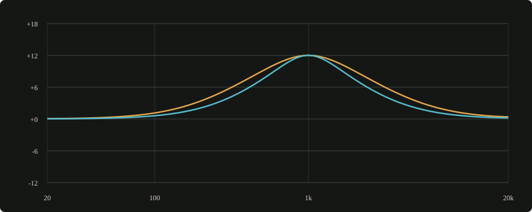

SIMLAF instruments, effects, microphone modelling, mastering tools and the SIMLAF DAW 2
SIMLAF · Flagships
TUFANI
52 amps. Your guitar's next voice.
52 amps whose tone stacks are computed from their component values, with speakers, movable mics, your own impulse responses, 77 effects and a tuner. Plays as a plug-in or as a standalone…
A complete bass rig, from synth-bass and 808 amps to cabinets, mics and effects, with tools that keep the low end readable on small speakers. Plays as a plug-in or as a standalone app for…
Put any of 148 speaker models in any of 88 modelled rooms and hear them on your headphones, tuned to your headphones and your ears with Ear ID. Speakers mode fits the monitors on your desk…
Spectral finds harsh resonances and tames them as they happen. It also compresses, expands and ducks across the spectrum. Minimum-phase processing keeps it at zero latency by default, with…
Everything a vocal goes through, in one plug-in: repair, contour, level riding, de-essing, tuning, doubles and harmony, echo and space. Live and Studio modes.
An additive synth that can rebuild any recording from its partials, with stereo phase, or turn an image into sound. Spectral filters and 372 designed presets.
KAMILI brings whole-song diagnosis, explained processing plans and Master Lab into a 47-module mastering studio. Render alternative chains, verify the complete song, audition at matched…
Load any of 13 modelled units into six slots in series: valve preamp, programme EQ, vari-mu, opto, class-A channel, discrete channel, FET limiter, VCA bus, broadcast amp, console bus, tape,…
26 pianos, each solved from the physics of its hammers, its strings and its soundboard rather than recorded: eight concert grands, five studio grands, six uprights, three historical…
Five physical engines — modal, mesh, modal with mesh, log drum and particle — across fifteen instrument families, with 8,580 factory instruments filed by production genre, 20 kits of 32…
Two oscillators with FM, ring and sync over a struck resonant body, and a sub the pitch envelopes leave alone unless you aim one at everything. 137 factory instruments, from amapiano log…
One sound in, its pitch analysed, a playable sustained instrument out. SoundFont banks play beside your own recordings, and 18 factory instruments are each built from a single sample.
Six ways to excite eight structures, and an exchange rate set in hertz, so the instrument sounds the same at every sample rate. 142 instruments across thirteen families.
Expanded 1.3.2 engine preview: original curves, harmonic EQ and per-band spectral dynamics. Customer release availability is listed on the product page.
Seven compressor characters in one, at zero latency.
One compressor with seven characters, from clean and exact to glue, opto, FET, vari-mu, punch and mastering. Mid/side and side-chain filters are built in, and look-ahead stays off until you…
Up to six bands of compression, expansion or upward compression.
Split the signal into as many as six bands and choose, per band, whether to compress, expand or bring quiet detail up. The crossovers sum flat within 0.1 dB.
Nine saturation models, oversampled, with no added latency by default.
Nine saturation models with oversampling up to 8×, minimum phase by default so it adds no latency; linear phase is there if you want it. Auto gain matches loudness, so you judge the colour…
Pitch correction with 13 scales and formant preservation.
Correct pitch to any of 13 scales while keeping the voice's formants in place. Pitch detection needs a short window, so this is the one SIMLAF effect with latency: 6–15 ms in low-latency…
Original curve families, nominal 3 and 6 dB/oct bells, harmonic EQ and per-band spectral dynamics. Explore the expanded engine and its actual responses.
Two deliberately broad contours, plotted from the expanded engine at the same frequency, gain and Q.

● 3 dB/oct● 6 dB/oct
Nominal finite-gain bell shoulders · 48 kHz · Expanded 1.3.2 engine preview. The interface capture above has 12 dB/oct selected; all three settings are available.
Explore original instruments, effects, microphone modelling and the DAW. Individual planned prices and release details are shown with each product. The store is not open yet.
New releases and SIMLAF news. Unsubscribe any time. See our privacy notice.
Cookies & privacy
We use browser storage for your cart and privacy choices. Choose whether to allow analytics and advertising technologies. Essential storage keeps the cart and privacy choices working.